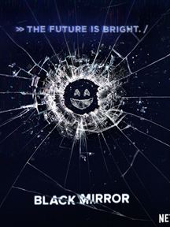
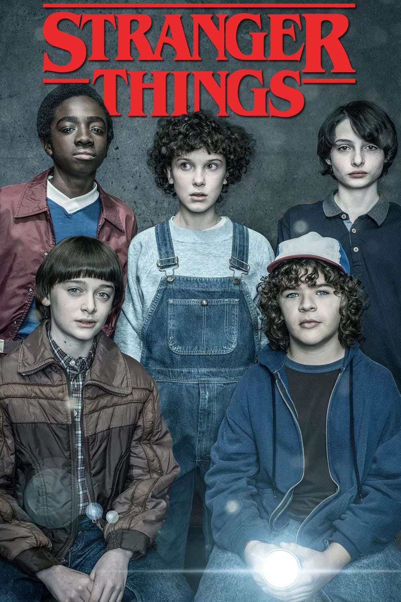
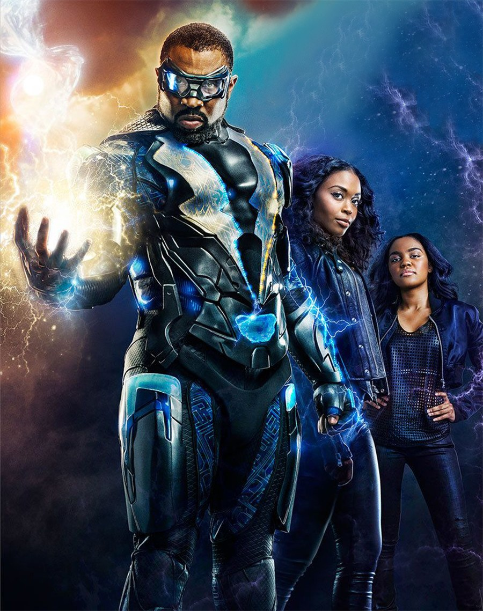
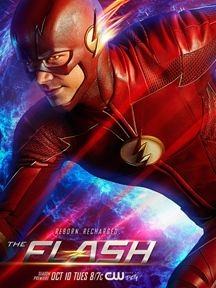

Black Mirror
Desde 2011 / 60min / Drama, Ficção científica, Suspense Direção: Charlie Brooker Elenco: Daniel Ings, Angourie Rice, Crystal Clarke Nacionalidade Reino Unido Uma espécie de híbrido entre "The Twilight Zone" e "Tales of the Unexpected", Black Mirror explora sensações do mal-estar contemporâneo. Cada episódio conta uma história diferente, traçando uma antologia que mostra o lado negro da vida atrelada à tecnologia.

Stranger Things
Desde 2016 / 55min / Drama, Fantasia, Suspense Direção: Matt Duffer, Ross Duffer Elenco: Millie Bobby Brown, Winona Ryder, Finn Wolfhard Nacionalidade EUA Quando Will (Noah Schnapp), um menino de doze anos, desaparece misteriosamente, o xerife Jim Hopper (David Harbour) inicia uma operação para encontrá-lo. Enquanto isso, Mike (Finn Wolfhard), Dustin (Gaten Matarazzo) e Lucas (Caleb McLaughlin), melhores amigos do garoto, decidem procurar Will por conta própria. Mas as investigações acabam os levando a experimentos secretos do governo e a uma peculiar menina perdida na floresta.

Raio Negro
Desde 2018 / 42min / Drama, Fantasia, Ação Direção: Greg Berlanti, Mara Brock Akil, Salim Akil Elenco: Cress Williams, China Anne McClain, Nafessa Williams Nacionalidade EUA Jefferson Pierce é um pai de família que precisa voltar a atuar como o justiceiro Black Lightning quando a violênc,ia de gangues ameaça o futuro de sua comunidade e sua filha se torna obcecada com a execução da justiça. Ele precisa agir com cuidado, entretanto, pois a polícia está á sua procura.

Flash
Desde 2014 / 42min / Fantasia, Ação Direção: Greg Berlanti, Andrew Kreisberg Elenco: Grant Gustin, Candice Patton, Danielle Panabaker Nacionalidade EUA Barry Allen (Grant Gustin) era um funcionário da Polícia Científica que, ao sofrer um acidente, foi banhado por produtos químicos em seu laboratório e, em seguida, atingido por um raio. Foi a partir disso que ele começou a ser capaz de canalizar os poderes vindos do "Campo de Velocidade", e se locomover em altíssimas velocidades. Usando uma máscara e um uniforme vermelho, ele começa a usar suas habilidades para patrulhar Central City com a ajuda dos cientistas da S.T.A.R. Labs, e detém vilões ao mesmo tempo em que procura descobrir quem foi o assassino de sua mãe.